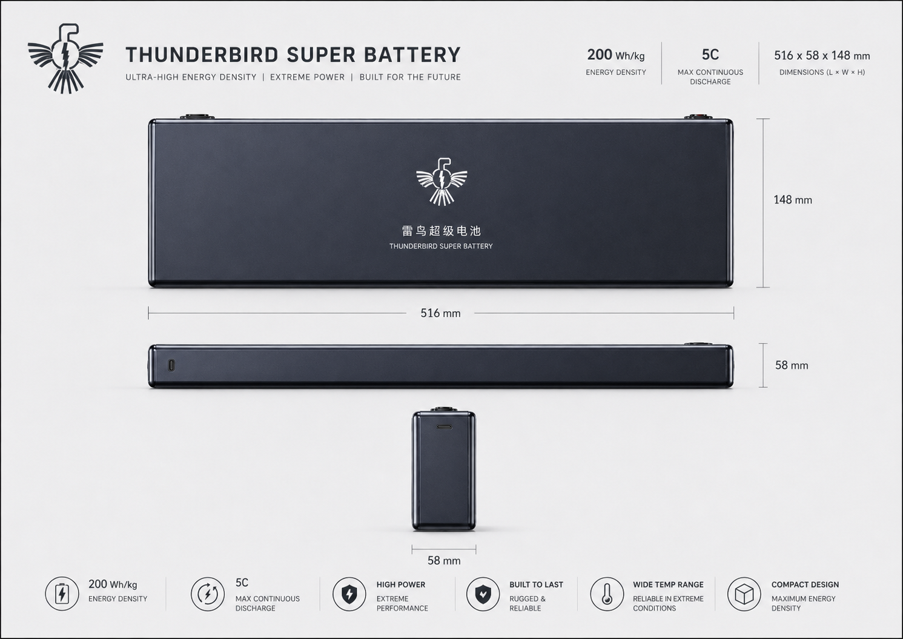

SPECIFICATIONS & INTERFACES
规格与接口
结构化字段展示版本、电压、功率/能量、尺寸、热管理、通信和安装条件。

雷鸟超级电池 · TB-QS-08Ah
重量敏感、持续中高倍率、受控环境任务。
产品定位
所有规格均绑定产品版本、样品状态、测试条件与批准状态。页面不以族级极值替代单一 SKU，也不把设计目标写成已验证结果。
MECHANISM & ARCHITECTURE
机理与架构
产品能力需要与母排、BMS/EMS、热管理、保护、通信、安装和维护共同验证。
SPECIFICATIONS & INTERFACES
结构化字段展示版本、电压、功率/能量、尺寸、热管理、通信和安装条件。
TESTING & CERTIFICATION
展示测试对象、样本量、温度、倍率、采样、EOL、实验室和批准状态。
INSTALLATION & SERVICE
明确运输、吊装、消防、维护空间、质保、备件和责任边界。
CLAIMS REGISTER
下一步
提交项目、技术、合作、参访或人才需求，进入对应的责任窗口。
前往联系入口